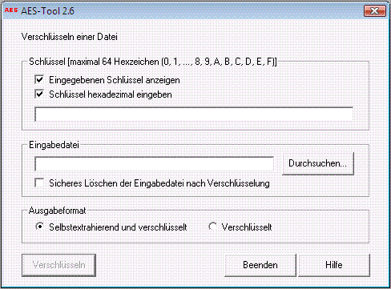

Über das eigenständige, zum Paket CrypTool gehörende Programm AES-Tool kann aus einem Dokument ein selbstextrahierendes Archiv erstellt werden. Das Archiv wird mit dem Algorithmus AES (Rijndael) im CBC-Modus verschlüsselt.
Wird diese Option in CrypTool ausgewählt, so öffnet sich das Hauptfenster von AES-Tool.
Die Funktionalität von AES-Tool ist in drei Bereiche unterteilt:
AES-Tool dient zum Austausch verschlüsselter Daten mit anderen Benutzern. Es enthält keine Verwaltungskomponente für Schlüssel. Diese müssen daher wie bei allen symmetrischen Verfahren zwischen den Benutzern auf einem sicheren Weg extra ausgetauscht werden.
Das AES-Tool kann auch als eigenständiges Programm (ohne CrypTool) verwendet werden. Lizenzbestimmung und der Haftungsausschluss sind die gleichen wie beim CrypTool-Paket.
Bemerkung 1:
Mit dem AES-Tool verschlüsselte Dokumente können in CrypTool nicht über das Menü Ver-/Entschlüsseln \ Symmetrisch \ Rijndael entschlüsselt werden. Das gleiche gilt im umgekehrten Sinne, d.h. man kann mit dem AES-Tool keine Dokumente entschlüsseln, die in CrypTool über Menü Ver-/Entschlüsseln \ Symmetrisch \ Rijndael verschlüsselt wurden. Das liegt daran, dass CrypTool und AES-Tool verschiedene Dateiformate nutzen: Eine mit dem AES-Tool verschlüsselte Datei enthält unter Umständen zusätzliche Daten neben der Nutzlast, zum Beispiel den eingebetteten AES-Tool-Programmcode.
Bemerkung 2:
Falls AES-Tool aus CrypTool heraus aufgerufen wird, wird im AES-Tool Hauptfenster das Feld Eingabedatei automatisch mit einem Pfad der Form C:\TEMP\cry7.org vorbelegt (statt C:\TEMP wird der Inhalt der Umgebungsvariablen TEMP eingesetzt und statt 7 kann eine andere Zahl erscheinen). Diese Datei ist eine Kopie der aktuell in CrypTool geöffneten. Sie enthält gegebenenfalls alle manuellen Änderungen, selbst wenn diese in CrypTool noch nicht gespeichert wurden.
Bemerkung 3:
Das AES-Verschlüsselungsverfahren arbeitet mit einer Blocklänge von 128 Bit und variabler Schlüssellänge, insbesondere 128, 192 und 256 Bit. Der eingegebene Schlüssel wird so mit Hex-Nullen aufgefüllt, dass er die jeweilige Mindestlänge von 128, 196 bzw. 256 Bit erreicht.
Zu kurze Schlüssellängen stellen also ein Sicherheitsrisiko dar (vergleiche Dialog Schlüsseleingabe).
Bemerkung 4:
Das AES-Tool Version 2.3 wurde als Standalone-Programm mit Dateien bis 4 GB erfolgreich getestet.